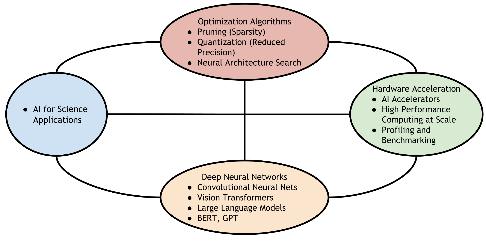
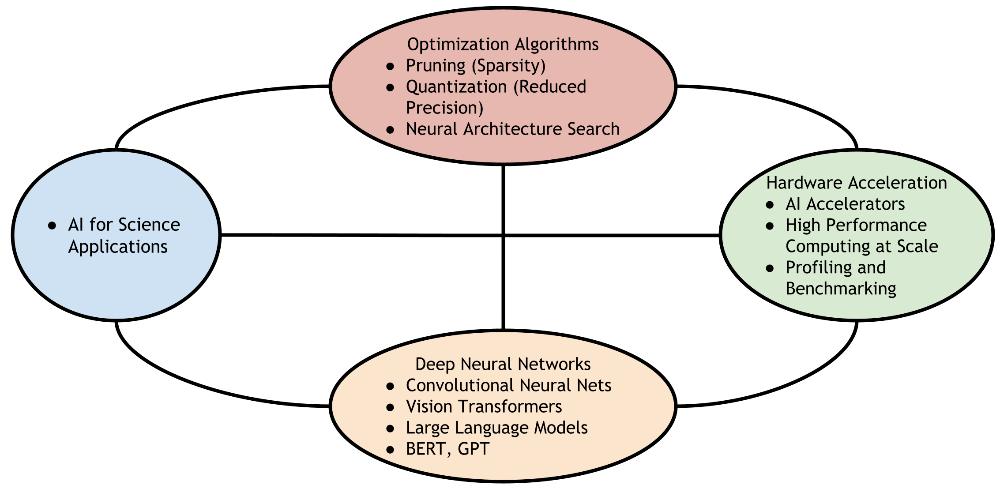

Krishna Teja Chitty-Venkata
 |
Postdoctoral Researcher Contact Information: |
About Me
-
I am a passionate and enthusiastic researcher, working primarily at the intersection of Systems and Deep Learning
-
I am currently working as a Postdoctoral Researcher at Argonne National Laboratory (US Department of Energy, Office of Science) with Murali Emani and Venkatram Vishwanath
-
I finished my PhD from Iowa State University in Computer Engineering, under the guidance of Prof. Arun Somani
-
My research interests span across Machine Learning (ML), Deep Learning Inference Optimization, Computer Architecture, High Performance Computing (HPC), Computer Vision, AI Accelerators and Large Language Models (LLMs)
Education
-
Iowa State University, Ames, Iowa, USA
Doctor of Philosophy (PhD)
Department of Electrical and Computer Engineering
August 2017 - July 2023
Dissertation Title: Hardware-aware Design, Search and Optimization of Deep Neural Networks
PhD Supervisor: Prof. Dr. Arun Somani
-
University College of Engineering, Osmania University, Hyderabad, India
Bachelor of Engineering
Electronics and Communication Engineering
2013 - 2017
PhD Research
-
I worked as a Research Assistant under the supervision of Dr. Arun Somani in the Dependable Computing and Networking Laboratory on topics related to Deep Learning, Computer Architecture and Parallel Computing
-
I primarily worked at the intersection of Systems (Hardware Acceleration) and Deep Learning (Computer Vision) which include designing efficient Neural Network algorithms (Pruning, Quantization and Neural Architecture Search) for processing on Special Purpose Accelerators (TPU-like) and General Purpose devices (CPU, GPGPU). I also worked on different problems (fault tolerance, memory accesses) with respect to special purpose DNN hardware
-
The summary of my PhD research projects are as follows:
- We developed “Hardware Dimension Aware Pruning” (HDAP) method for array-based accelerators, multi-core CPUs, and Tensor Core GPUs by considering the underlying dimension of the system. In every pruning iteration, the HDAP algorithm prunes the number of nodes/filters in each layer based on the size of the underlying hardware in consideration. We achieve an average speedup of 3.2x, whereas the baseline achieves only 1.5x on Turing Tensor Core-enabled GPU. Our method attains an average speedup of 4.2x on the selected benchmarks on the Eyeriss hardware, whereas the baseline method attains only 1.6x. [Paper 1] [Paper 2]
- We designed “Fault and Array size based Pruning” (FPAP) algorithm with the intent of bypassing the faults and removing the internal redundancy at the same time for efficient inference. We compare our method with recent pruning methods under different fault scenarios and array sizes. We achieved a mean speedup of 4.2x, where the baselines achieved 1.6x on ConvNet, NiN, AlexNet, and VGG16 over Eyeriss in the case of random faults. [Paper 1] [Paper 2]
- We developed “Mixed Sparse and Precision Search (MSPS) method to search for the optimal weight matrix type (sparse or dense) and precision combination for every layer of the pretrained model, such as ResNet50 which outperformed the manually designed Integer 8 ResNet50 network in terms of accuracy and latency. We extended the MSPS method and designed the “Architecture, Sparsity, and Precision Search” (ASPS) algorithm to find better model hyperparameters, matrix type, and precision in a single loop. The search method outperforms the manually tuned and automatically designed MSPS models on the ImageNet dataset. The best ASPS model is 1.1x faster and 0.57% more accurate than the baseline sparse-only Integer 8 ResNet50 model [Paper]
- We designed “Array Aware Neural Architecture Search” (AANAS) method to automatically design efficient CNNs for a fixed array-based neural network accelerator. The previous Hardware-Aware Neural Architecture Search (HW-NAS) methods consider a fixed search space for different hardware platforms and search within its predefined space. We designed the search space based on the underlying hardware array dimensions to search for efficient CNN architectures for optimal inference performance. [Paper]
- We conducted an in-depth and state-of-the-art review of several Hardware-aware Neural Architecture Search (NAS) algorithms for MCU, CPU (mobile and desktop), GPU (Edge and server-level), ASIC, FPGA, ReRAM, DSP, and VPU platforms. We also reviewed hardware-aware mixed precision search algorithms and co-search methodologies of Neural algorithms and accelerators. The paper guides researchers in choosing the best possible algorithm for a given application and hardware [Paper]
- We conducted an in-depth review of Neural Architecture Search techniques, targeting the Transformer model and its family of architectures, such as Bidirectional Encoder Representations from Transformers (BERT) and Vision Transformers.Transformer-based Deep Neural Network architectures have gained tremendous interest due to their effectiveness in various applications across Natural Language Processing (NLP) and Computer Vision (CV) domains [Paper]
- We conducted an in-depth review of Neural Architecture Search Benchmarks (NAS-Bench) by investigating the necessity, types and challenges in a NAS benchmark design. A typical NAS benchmark consists of precomputed evaluation metrics, such as the validation accuracy, FLOPs, number of parameters, and latency on the hardware of all the neural architectures present in the predefined search space. We also provide future directions in this fast growing space and the result of our study in the growing field will assist the research community in developing a better next generation of NAS benchmarks [Paper]
- We conducted a comprehensive survey of techniques for optimizing the inference phase of transformer models. We reviewed knowledge distillation, pruning, quantization, neural architecture search and lightweight network design techniques at the algorithmic level and hardware level optimization techniques for novel hardware accelerators for transformers. [Arxiv Paper]
 
